crosslink
vignette.RmdAn R package for network visualization of grouped nodes
The goal of crosslink is to visualize the network of grouped nodes
1. Installation
You can install the released version of crosslink from github with:
remotes::install_github("zzwch/crosslink", build_vignettes = TRUE)Or download the compressed file Link, then run
remotes::install_local(path = "./crosslink-master.zip", build_vignettes = TRUE)2. Quick start
Examples of typical crosslink usage.
library(crosslink)
#> 载入需要的程辑包：ggplot2#> 载入需要的程辑包：magrittr
# generate a CrossLink object
cl <- crosslink(demo$nodes, demo$edges, demo$cross.by, odd.rm = F,spaces = "flank")
# set headers if needed
cl %<>% set_header(header = c("A","B","C","D","E","F"))
# plot the network
# By default, node color is coded and node size is proportional to its degree (calculated internally).
# And edge color is coded by the cross group of the edge's source node.
cl %>% cl_plot()
Users can also custom the aesthetics for node, edge, label and header by using cl_plot, which wrapped multiple ggplot2::geom_* functions in one interface. Please see below (Plotting modules) for more details.
3. Step by step
This is a basic example of the basic function of crosslink packages,including 1). Input data 2). Generate CrossLink class 3). Coordinate transformation 4). Layout modules 5). Plotting modules
1). Input data
crosslink needs two files as input.
a. nodes (must have two columns: node name and node type)
b. edges data (must have two columns: source node and target node).
Here, crosslink uses the function ‘gen_demo’ to generate demo data.
n <- 6
demo <- gen_demo(n_cross = n,n_node = 4:(n+3), n_link = 3:(n+1), seed = 66)
nodes <- demo$nodes
edges <- demo$edges
cross.by <- demo$cross.by2). Generate crossLink class
crosslink can generate an object of crosslink class for plot.
# users can define 'odd.rm' to choose if remove the nodes have zero relationship with any other nodes when generate crosslink class
# user can set intervals between nodes and gaps through spaces and gaps.
cl <- crosslink(nodes, edges, cross.by, odd.rm = F,spaces = "flank")
# Header can be customized through 'set_header'
cl %<>% set_header(header = c("A","B","C","D","E","F"))3). Coordinate transformation
The default layout is initialized by crosslink function.
cl %>% cl_active() # get currrently active layout information of a CrossLink object
#> [1] "default"And, currently active layout will be based on for transforming coordinates. You can set another layout as active layout. All available layouts can be listed. See layout modules to set more layouts.
cl %>% cl_layouts() # get all available layouts in a CrossLink object
#> [1] "default"
cl_active(cl) <- "default" # set your favorate layout Coordinate transformation consists of affine transformation and functional transformation. The tf_affine function contains tf_rotate, tf_shift, tf_shear, tf_flip and tf_scale function. The tf_fun interface allows user to custom transforming function.
Note : The active layout before transformation will be based on to perform transforming, and the transformed coordinates will be stored in ‘transforming’ layout (Default, set layout to change it, and a novel layout is permitted.).
# tf_rotate, rotating in a specific angle with (x,y) as the center.
cl %>% tf_rotate(x=0,y=1,angle = 45) %>% cl_plot()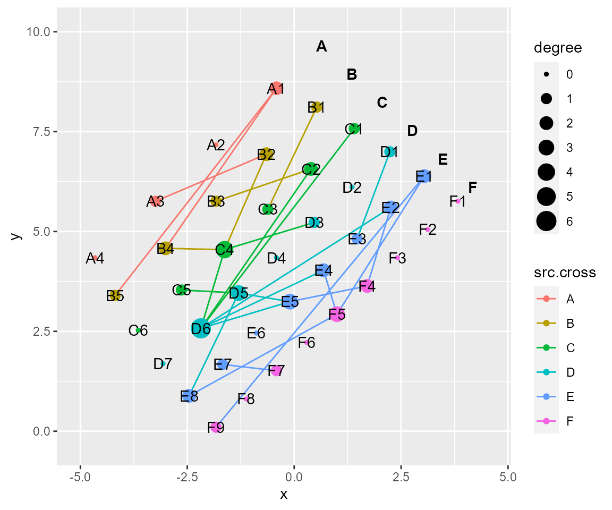
# tf_shift, shifting a relative distance according to x-axis or y-axis
cl %>% tf_shift(x=1,y=-1) %>% cl_plot()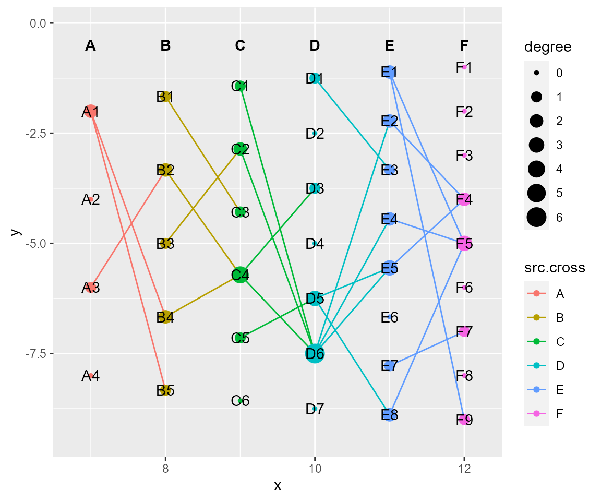
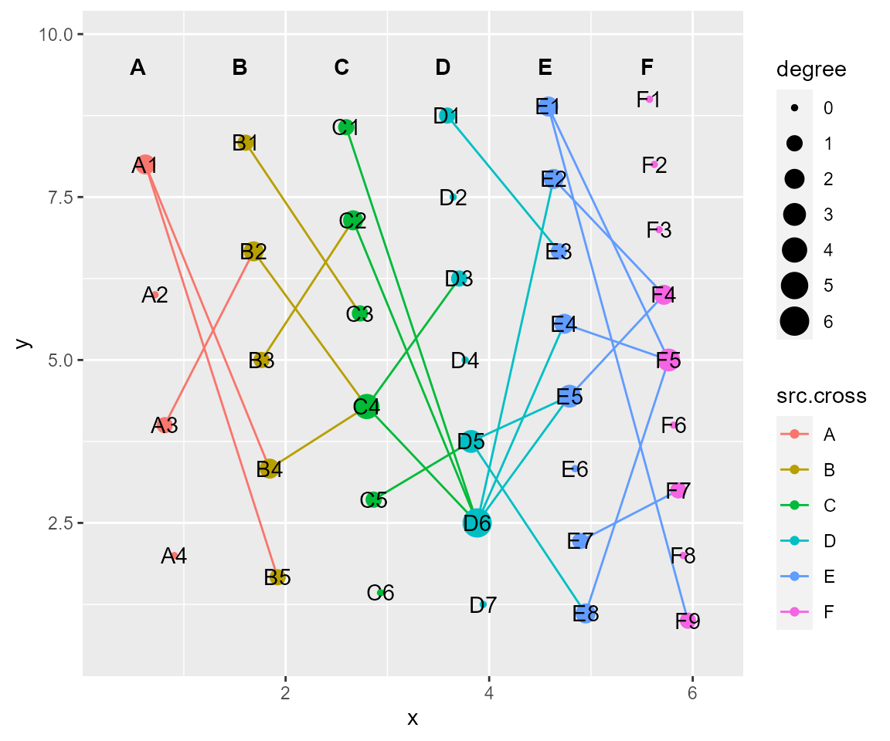
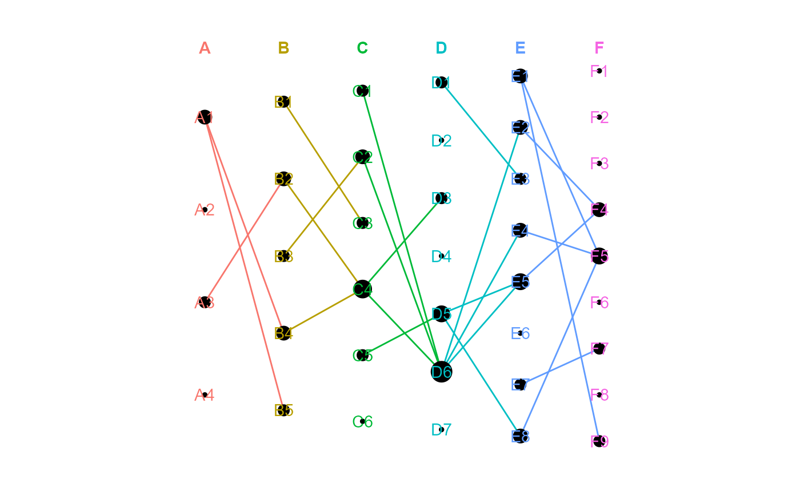
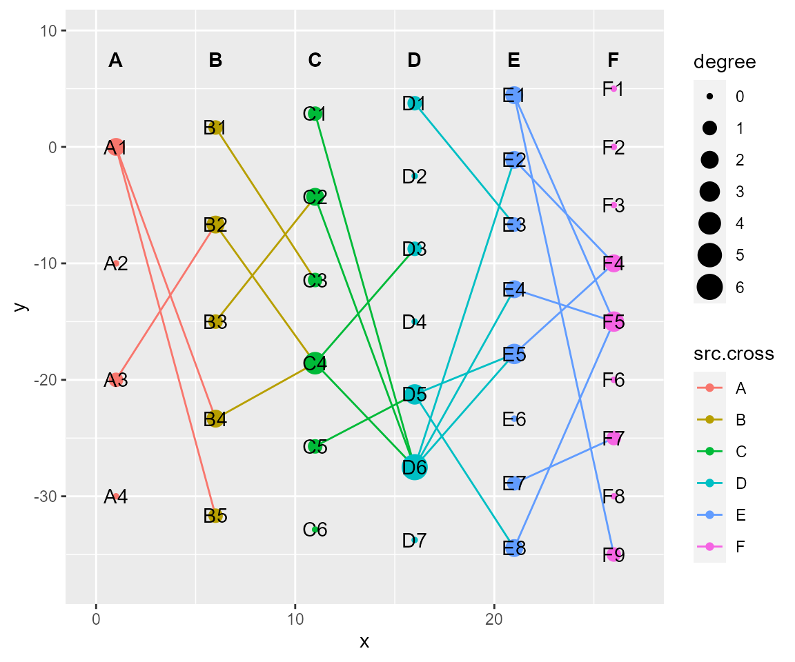
# tf_fun, coordinate transformation according to custom-defined function
cl %>% tf_fun(fun = sin,along = "y",xrange.from=c(0,0.5*pi)) %>% cl_plot()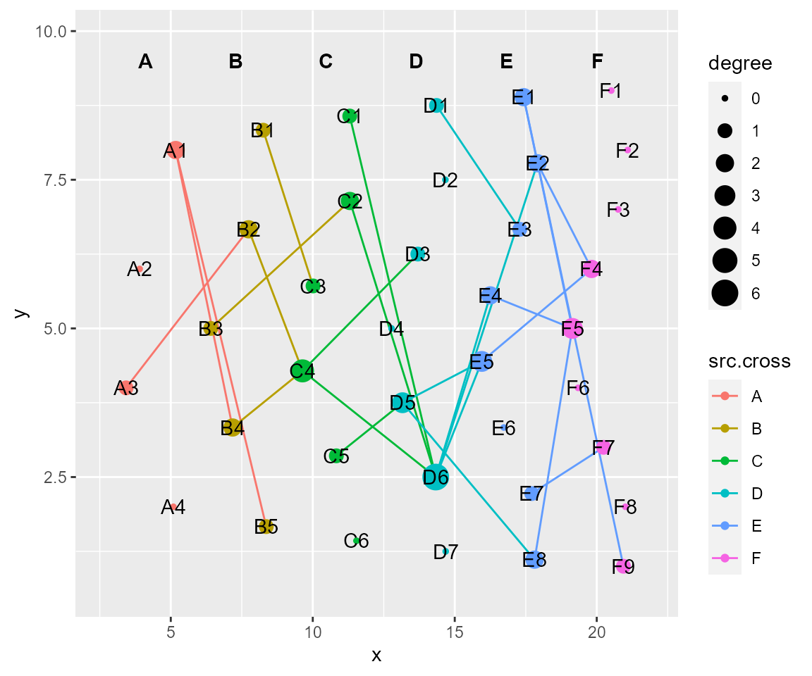
# combined transformation functions
cl %>% tf_flip(axis = "y") %>% tf_fun(fun = sin,along = "y",xrange.from=c(0,0.5*pi)) %>% cl_plot()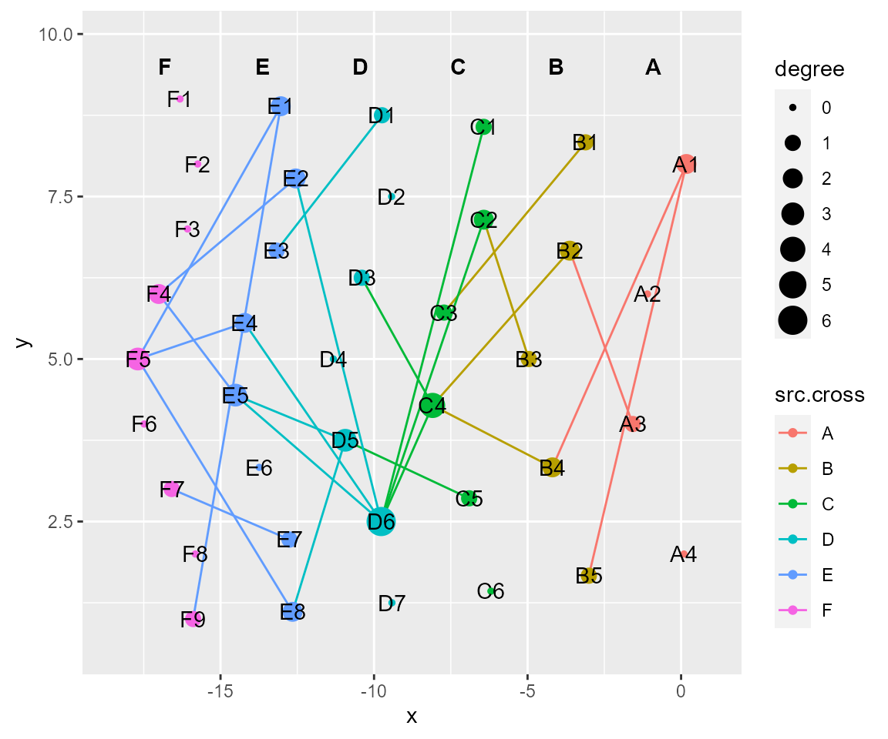
4). Layout modules
Different layout styles can be stored in a CrossLink object.
Because ‘default’ layout is routinely used as base layout for the layout module, it is strongly recommended not to override the ‘default’ layout (Important), unless you have known the transformation and layout modules well!
Several commonly used layout styles are predefined, including row, column, arc, polygon and hive. And crosses can be placed in one or multiple layouts.
Note : The ‘set_header’ function can be called to conveniently place headers after layouting.
# The 'default' layout is actually column.
cl %>% cl_plot()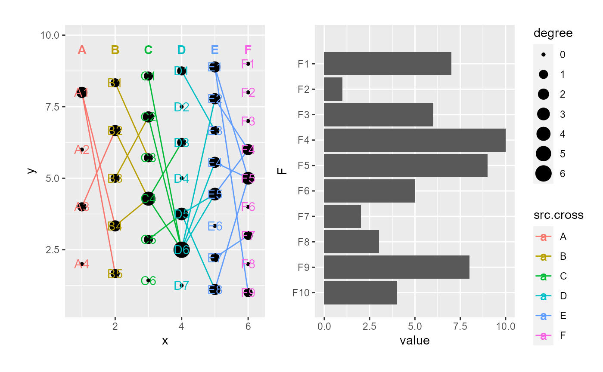
# layout by column
cl %>% layout_column(layout_save = "column") %>% cl_plot()
#> Copy layout default into column, and Set active layout to column
#> Copy layout default into column, and Set active layout to column
# layout by row
cl %>% layout_row(layout_save = "row") %>% cl_plot()
#> Copy layout default into row, and Set active layout to row
#> Copy layout temp into row, and Set active layout to row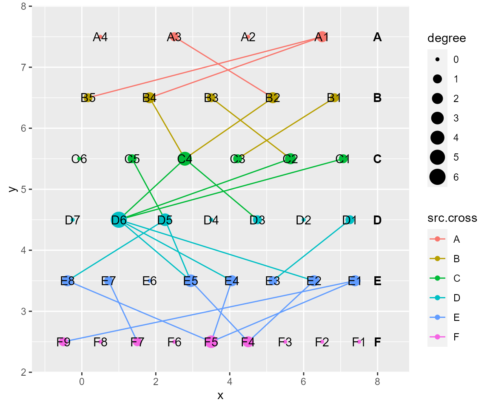
# layout by arc, set header after transformation
cl %>% layout_arc(angles = 60,crosses = c("E","F"), layout_save = "arc") %>% set_header(hjust = 0.5, vjust = 1)%>% cl_plot()
#> Copy layout default into temp, and Set active layout to temp
#> Copy layout default into arc, and Set active layout to arc
#> Copy layout temp into arc, and Set active layout to arc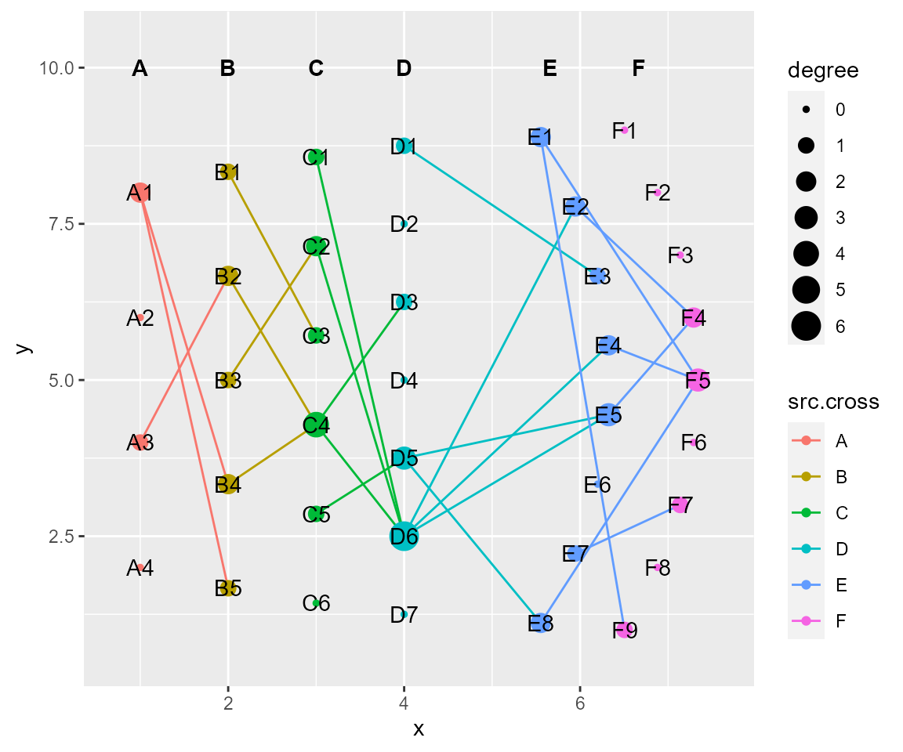
# layout by polygon (list of angles must have the same length with crosses)
cl %>% layout_polygon(layout_save = "polygon") %>% cl_plot()
#> Copy layout default into polygon, and Set active layout to polygon
#> Copy layout temp into polygon, and Set active layout to polygon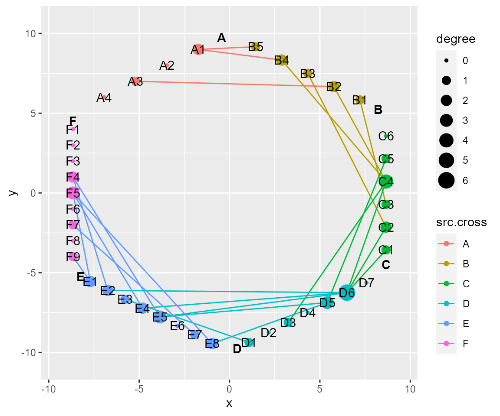
# layout by hive
cl %>% layout_hive(layout_save = "hive") %>% cl_plot()
#> Copy layout default into hive, and Set active layout to hive
#> Copy layout temp into hive, and Set active layout to hive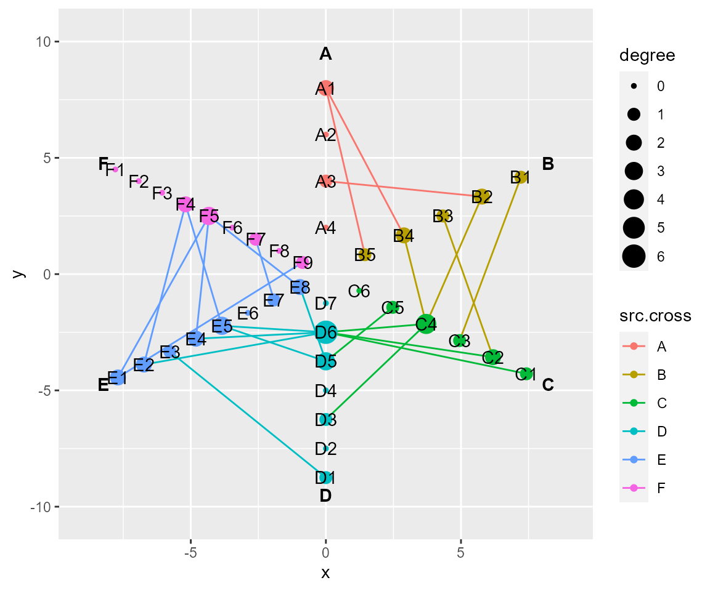
5). Plotting modules
We introduce this wrapper function cl_plot in three steps.
- quick plotting (
cl_plot)
- aesthetic settings ( The color, size, type and text of the nodes and lines in the network)
- combination of the network diagram with the corresponding node annotation graph in aligning coordinates
b. aesthetic settings
# aesthetic settings based on ggplot2 system, some specific examples are shown below.
# show available variables for aesthetic setting
cl %>% show_aes()
#> Available meta.data names are showing below.
#> Cross: node, node.type, x, y, cross, key, type, degree
#> Link: src, tar, src.cross, tar.cross, source, target, src.degree, tar.degree, x, y, xend, yend
#> Header: node, node.type, x, y, cross, header
# set colors, shapes and size of nodes
# cross:a named list of arguments for crosses. usage same as ggplot2::geom_point(). Set NULL to use default settings, or Set NA to not show.
cl %>% cl_plot(cross = list(mapping = aes(color = type, shape= type),
scale = list(color = scale_color_manual(values = RColorBrewer::brewer.pal(6, "Dark2"),
guide = guide_legend(ncol = 2)),
size = scale_size_continuous(range = c(1,5),
guide = guide_legend(ncol = 2)),
shape = scale_shape_manual(values = c(13:18),
guide = guide_legend(ncol = 2))
)
))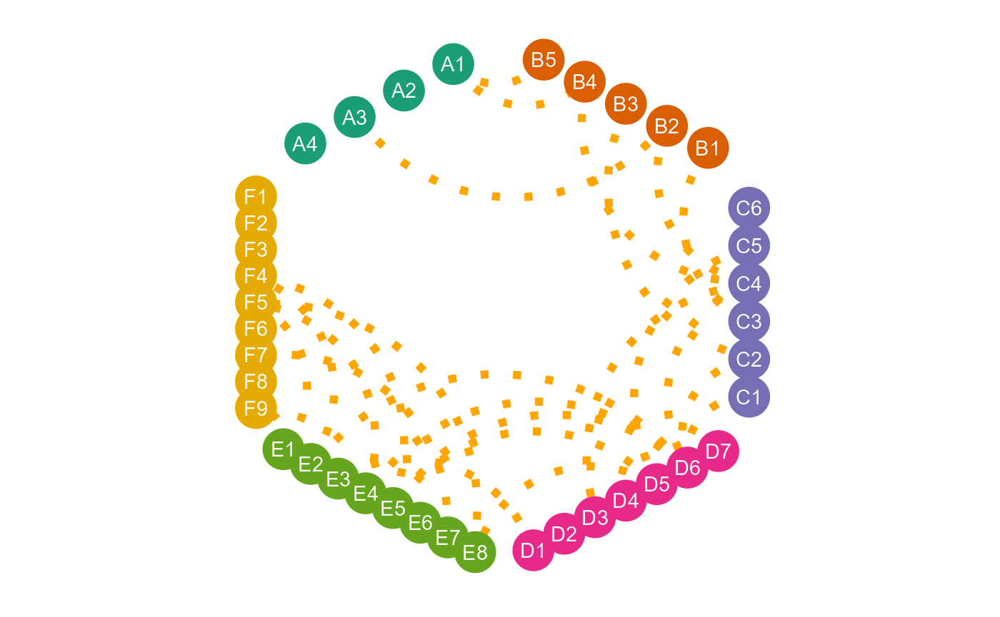
# set colors, linetypes and size of edges
# link: a named list of arguments for links. usage same as ggplot2::geom_segment(). Set NULL to use default settings, or Set NA to not show.
cl %>% cl_plot(link = list(mapping = aes(color = src.cross, linetype =src.cross, size = src.degree),
scale = list(color = scale_color_manual(values = RColorBrewer::brewer.pal(5, "Dark2"),
guide = guide_legend(ncol = 2)),
size = scale_size_continuous(range = c(1,3),
guide = guide_legend(ncol = 2)),
linetype = scale_linetype_manual(values = c(1:6),
guide = guide_legend(ncol = 2))
)
),
cross = list(show.legend = F) # disable cross's legends
)
# set header styles
# header: a named list of arguments for headers. usage same as ggplot2::geom_text(). Set NULL to use default settings, or Set NA to not show.
cl %>% cl_plot(header = list(mapping = aes(color= cross),
scale = list(color = scale_color_manual(values = RColorBrewer::brewer.pal(8, "Dark2"))),
size = 5.5
))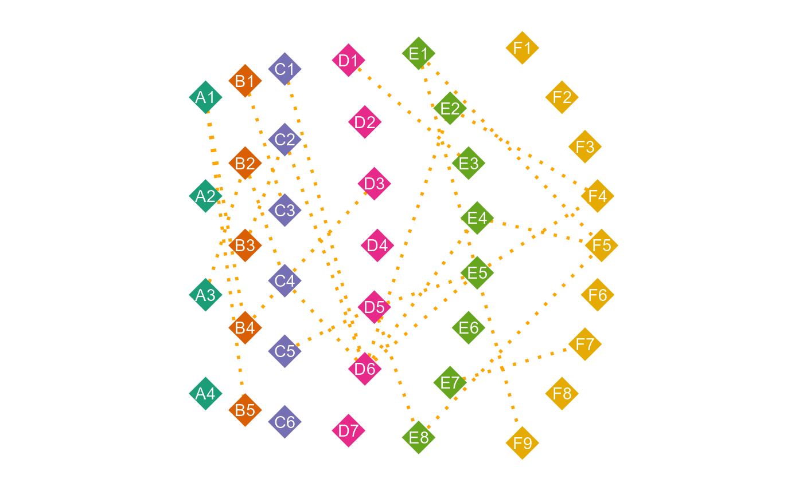
# set aesthetics (e.g., color, size, position) of labels
# label: a named list of arguments for labels of nodes. usage same as ggplot2::geom_text(). Set NULL to use default settings, or Set NA to not show.
cl %>% cl_plot(label = list(mapping = aes(color = type),
scale = list(color = scale_color_manual(values = RColorBrewer::brewer.pal(8, "Dark2"),
guide = guide_legend(ncol = 2))
),
nudge_y = -0.3, size = 4
))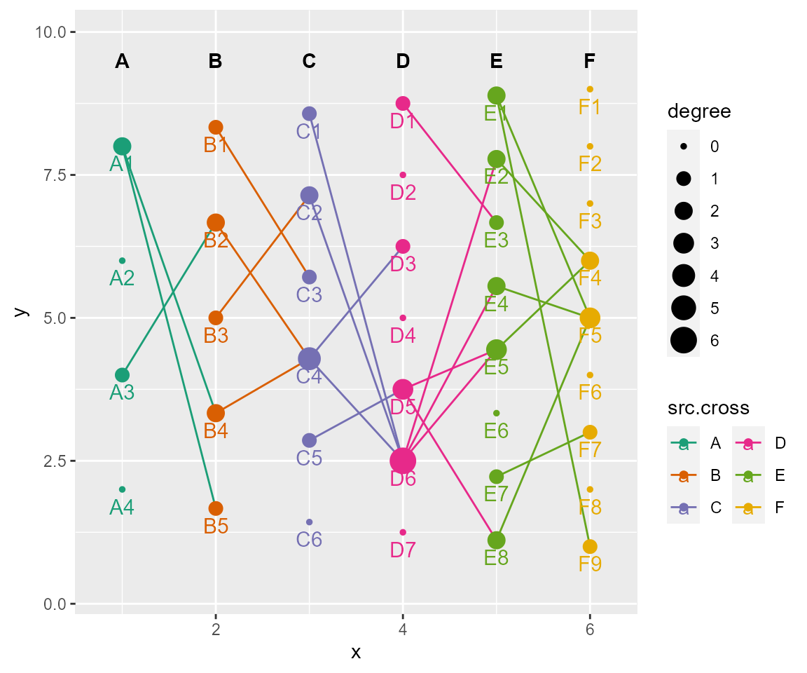
# set figure theme
# add: other gg object to be added to final plot, such as theme().
theme_use <- theme(legend.position = "top", aspect.ratio = 1,
axis.title = element_blank(),
axis.text = element_blank(),
axis.ticks = element_blank(),
panel.grid = element_blank(),
panel.background = element_blank())
cl %>% cl_plot(add = theme_use)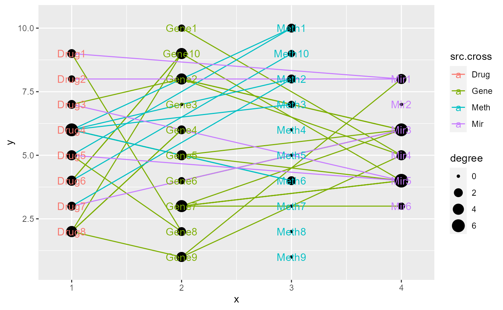
# combined all aesthetic settings.
cl %>% cl_plot(cross = list(mapping = aes(color = type, shape= type),
scale = list(color = scale_color_manual(values = RColorBrewer::brewer.pal(8, "Dark2"),
guide = guide_legend(ncol = 2)),
size = scale_size_continuous(range = c(1,5),
guide = guide_legend(ncol = 2)),
shape = scale_shape_manual(values = c(13:18),
guide = guide_legend(ncol = 2))
)
),
link = list(mapping = aes(x = x + 0.1, xend = xend -0.1,
color = src.cross,linetype =src.cross, size = src.degree),
scale = list(color = scale_color_manual(values = RColorBrewer::brewer.pal(8, "Dark2"),
guide = guide_legend(ncol = 2)),
size = scale_size_continuous(range = c(1,3),
guide = guide_legend(ncol = 2)),
linetype = scale_linetype_manual(values = c(1:6),
guide = guide_legend(ncol = 2))
),
size = 1.5
),
header = list(mapping = aes(color= cross),
scale = list(color = scale_color_manual(values = RColorBrewer::brewer.pal(8, "Dark2"),
guide = guide_legend(ncol = 2))),
size = 5.5
),
label = list(nudge_y = -0.3, size = 4
),
add = theme_use
)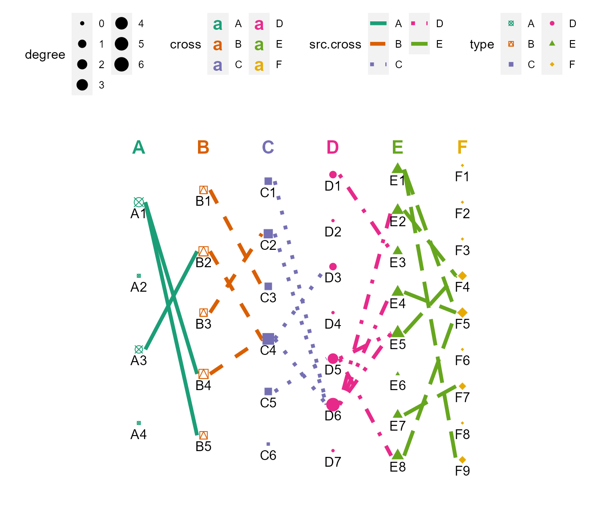
c. annotation figure
# cl_annotation： add annotation figure.
# top, bottom, left or right : ggplot object
# top.by, bottom.by, left.by, right.by : name of cross by which to align ggplot
ann.data <- data.frame(F=factor(paste0("F",c(1:10)),levels=paste0("F",c(10:1))),value=sample(size = 10,x=c(1:10)))
ann.data %>% ggplot(mapping = aes(x=F,y=value))+geom_bar(stat="identity")+coord_flip() -> rgtAnn
cl %>% cl_plot(annotation=cl_annotation(right= rgtAnn,right.by ="F"))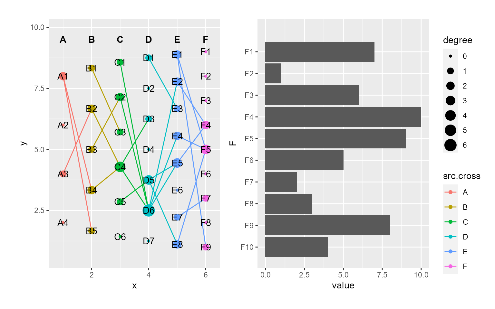
d. custom plots using ggplot2
Retrieving the metadata for nodes, edges and headers, with which users can plot the network in any way they like.
cl %>% get_cross() # get node information
#> node node.type x y cross key type degree
#> A2 A4 node 1 2.000000 A A4 A 0
#> A3 A3 node 1 4.000000 A A3 A 1
#> A4 A2 node 1 6.000000 A A2 A 0
#> A5 A1 node 1 8.000000 A A1 A 2
#> B2 B5 node 2 1.666667 B B5 B 1
#> B3 B4 node 2 3.333333 B B4 B 2
#> B4 B3 node 2 5.000000 B B3 B 1
#> B5 B2 node 2 6.666667 B B2 B 2
#> B6 B1 node 2 8.333333 B B1 B 1
#> C2 C6 node 3 1.428571 C C6 C 0
#> C3 C5 node 3 2.857143 C C5 C 1
#> C4 C4 node 3 4.285714 C C4 C 4
#> C5 C3 node 3 5.714286 C C3 C 1
#> C6 C2 node 3 7.142857 C C2 C 2
#> C7 C1 node 3 8.571429 C C1 C 1
#> D2 D7 node 4 1.250000 D D7 D 0
#> D3 D6 node 4 2.500000 D D6 D 6
#> D4 D5 node 4 3.750000 D D5 D 3
#> D5 D4 node 4 5.000000 D D4 D 0
#> D6 D3 node 4 6.250000 D D3 D 1
#> D7 D2 node 4 7.500000 D D2 D 0
#> D8 D1 node 4 8.750000 D D1 D 1
#> E2 E8 node 5 1.111111 E E8 E 2
#> E3 E7 node 5 2.222222 E E7 E 1
#> E4 E6 node 5 3.333333 E E6 E 0
#> E5 E5 node 5 4.444444 E E5 E 3
#> E6 E4 node 5 5.555556 E E4 E 2
#> E7 E3 node 5 6.666667 E E3 E 1
#> E8 E2 node 5 7.777778 E E2 E 2
#> E9 E1 node 5 8.888889 E E1 E 2
#> F2 F9 node 6 1.000000 F F9 F 1
#> F3 F8 node 6 2.000000 F F8 F 0
#> F4 F7 node 6 3.000000 F F7 F 1
#> F5 F6 node 6 4.000000 F F6 F 0
#> F6 F5 node 6 5.000000 F F5 F 3
#> F7 F4 node 6 6.000000 F F4 F 2
#> F8 F3 node 6 7.000000 F F3 F 0
#> F9 F2 node 6 8.000000 F F2 F 0
#> F10 F1 node 6 9.000000 F F1 F 0
cl %>% get_link() # get edges information
#> src tar src.cross tar.cross source target src.degree tar.degree x y
#> 1 A1 B4 A B A1 B4 2 2 1 8.000000
#> 2 A3 B2 A B A3 B2 1 2 1 4.000000
#> 3 A1 B5 A B A1 B5 2 1 1 8.000000
#> 4 B3 C2 B C B3 C2 1 2 2 5.000000
#> 5 B2 C4 B C B2 C4 2 4 2 6.666667
#> 6 B1 C3 B C B1 C3 1 1 2 8.333333
#> 7 B4 C4 B C B4 C4 2 4 2 3.333333
#> 8 C4 D3 C D C4 D3 4 1 3 4.285714
#> 9 C5 D5 C D C5 D5 1 3 3 2.857143
#> 10 C2 D6 C D C2 D6 2 6 3 7.142857
#> 11 C4 D6 C D C4 D6 4 6 3 4.285714
#> 12 C1 D6 C D C1 D6 1 6 3 8.571429
#> 13 D6 E4 D E D6 E4 6 2 4 2.500000
#> 14 D6 E5 D E D6 E5 6 3 4 2.500000
#> 15 D1 E3 D E D1 E3 1 1 4 8.750000
#> 16 D5 E8 D E D5 E8 3 2 4 3.750000
#> 17 D6 E2 D E D6 E2 6 2 4 2.500000
#> 18 D5 E5 D E D5 E5 3 3 4 3.750000
#> 19 E2 F4 E F E2 F4 2 2 5 7.777778
#> 20 E4 F5 E F E4 F5 2 3 5 5.555556
#> 21 E5 F4 E F E5 F4 3 2 5 4.444444
#> 22 E7 F7 E F E7 F7 1 1 5 2.222222
#> 23 E8 F5 E F E8 F5 2 3 5 1.111111
#> 24 E1 F9 E F E1 F9 2 1 5 8.888889
#> 25 E1 F5 E F E1 F5 2 3 5 8.888889
#> xend yend
#> 1 2 3.333333
#> 2 2 6.666667
#> 3 2 1.666667
#> 4 3 7.142857
#> 5 3 4.285714
#> 6 3 5.714286
#> 7 3 4.285714
#> 8 4 6.250000
#> 9 4 3.750000
#> 10 4 2.500000
#> 11 4 2.500000
#> 12 4 2.500000
#> 13 5 5.555556
#> 14 5 4.444444
#> 15 5 6.666667
#> 16 5 1.111111
#> 17 5 7.777778
#> 18 5 4.444444
#> 19 6 6.000000
#> 20 6 5.000000
#> 21 6 6.000000
#> 22 6 3.000000
#> 23 6 5.000000
#> 24 6 1.000000
#> 25 6 5.000000
cl %>% get_header() # get header of crosslink object
#> node node.type x y cross header
#> 1 A_HEADER header 1 9.5 A A
#> 2 B_HEADER header 2 9.5 B B
#> 3 C_HEADER header 3 9.5 C C
#> 4 D_HEADER header 4 9.5 D D
#> 5 E_HEADER header 5 9.5 E E
#> 6 F_HEADER header 6 9.5 F F4. Examples
There are several examples and practical applications.
1). examples used in the paper
generate a CrossLink object
cl <- crosslink(demo$nodes, demo$edges, demo$cross.by, odd.rm = F,spaces = "flank")
cl %<>% set_header(header = c("A","B","C","D","E","F"))a. layout by row
cl %>% layout_row() %>%
set_header(hjust = 0, vjust = 0.5) %>%
cl_plot(cross = list(mapping = aes(fill=type),
scale = list(color = scale_color_manual(values = RColorBrewer::brewer.pal(8, "Dark2")),
fill = scale_fill_manual( values = RColorBrewer::brewer.pal(8, "Dark2"))),
size=8,shape=24, color = "black"
),
link = list(mapping = aes(color = src.cross),
size=1.5, linetype=1),
label = list(color="white"),
header = list(mapping = aes(color= cross),
scale = list(color = scale_color_manual(values = RColorBrewer::brewer.pal(8, "Dark2"))),
size=5, show.legend = F
)
) %>%
cl_void(th = theme(aspect.ratio = 1))
#> Copy layout default into default, and Set active layout to default
#> Copy layout temp into default, and Set active layout to default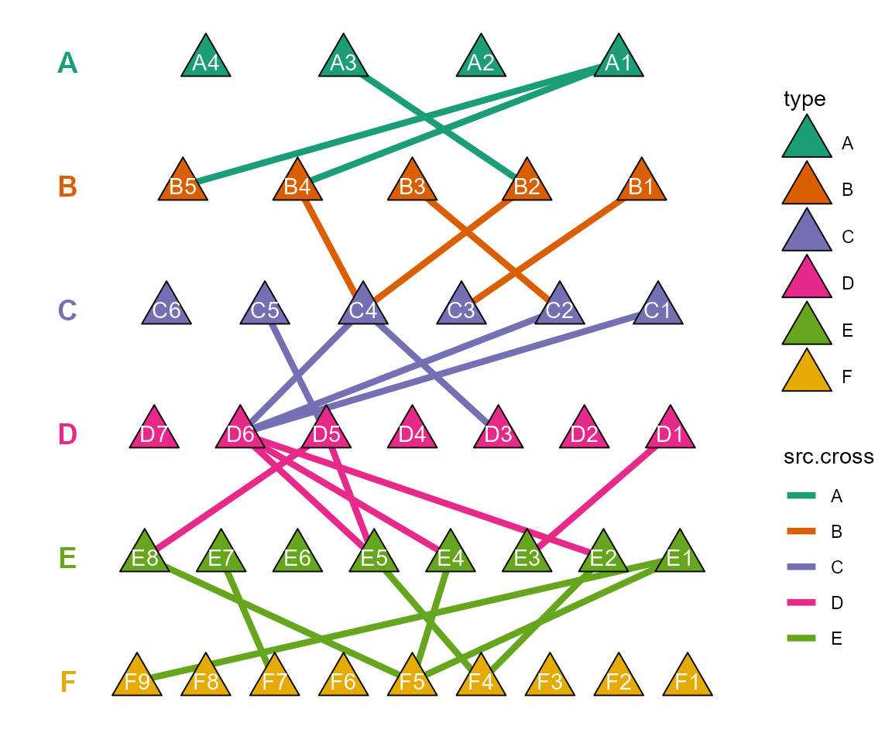
b. layout by rotate
cl %>%
tf_rotate(angle = 10, by.each.cross = T) %>%
cl_plot(cross = list(mapping = aes(fill = type),
scale = list(fill = scale_fill_manual(values = RColorBrewer::brewer.pal(8, "Dark2"))),
size=10, shape=24, color = "black"
),
link = list(mapping = aes(color = src.cross),
size=1.5, linetype=1),
label = list(color="white"),
header = list(mapping = aes(color= cross),
scale = list(color = scale_color_manual(values = RColorBrewer::brewer.pal(8, "Dark2"))),
size=5, show.legend = F
)
) %>%
cl_void(th = theme(aspect.ratio = 1))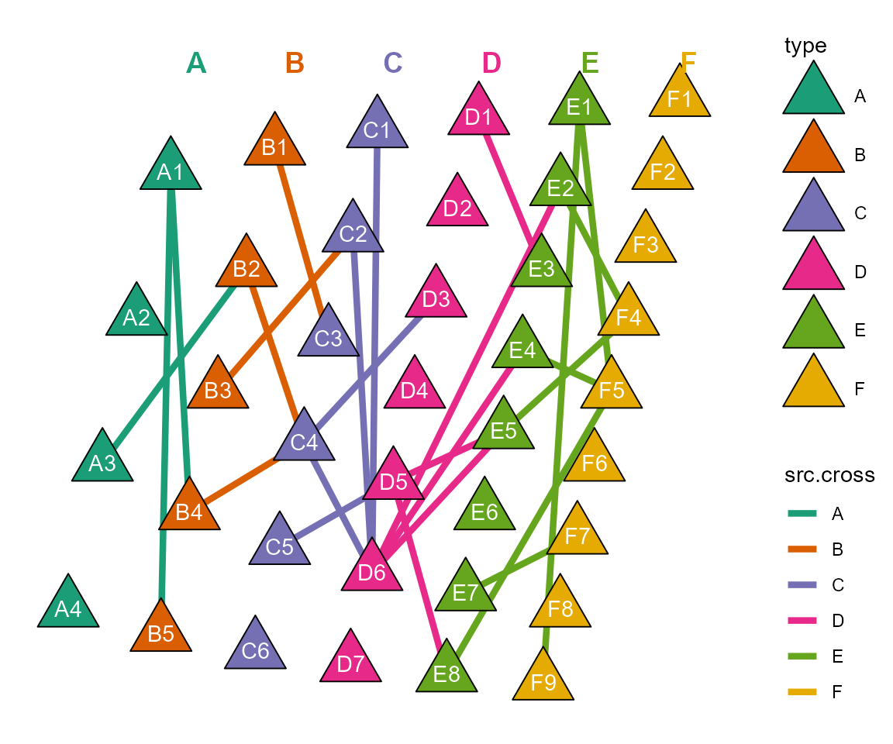
c. layout by polygon
cl %>% layout_polygon() %>%
#tf_rotate(angle = 45, by.each.cross = F) %>% # If the grouping is 4, rotate by this parameter and change from diamond to square
cl_plot(cross = list(mapping = aes(color = type),
scale = list(color = scale_color_manual(values = RColorBrewer::brewer.pal(8, "Dark2"))),
size=10,shape=16
),
link = list(geom = "curve",
mapping = aes(color = src.cross),
size=1.5, linetype=1
),
label = list(color="white"),
header= list(mapping = aes(color= cross),
scale = list(color = scale_color_manual(values = RColorBrewer::brewer.pal(8, "Dark2"))),
size=5
)
) %>%
cl_void(th = theme(aspect.ratio = 1))
#> Copy layout default into default, and Set active layout to default
#> Copy layout temp into default, and Set active layout to default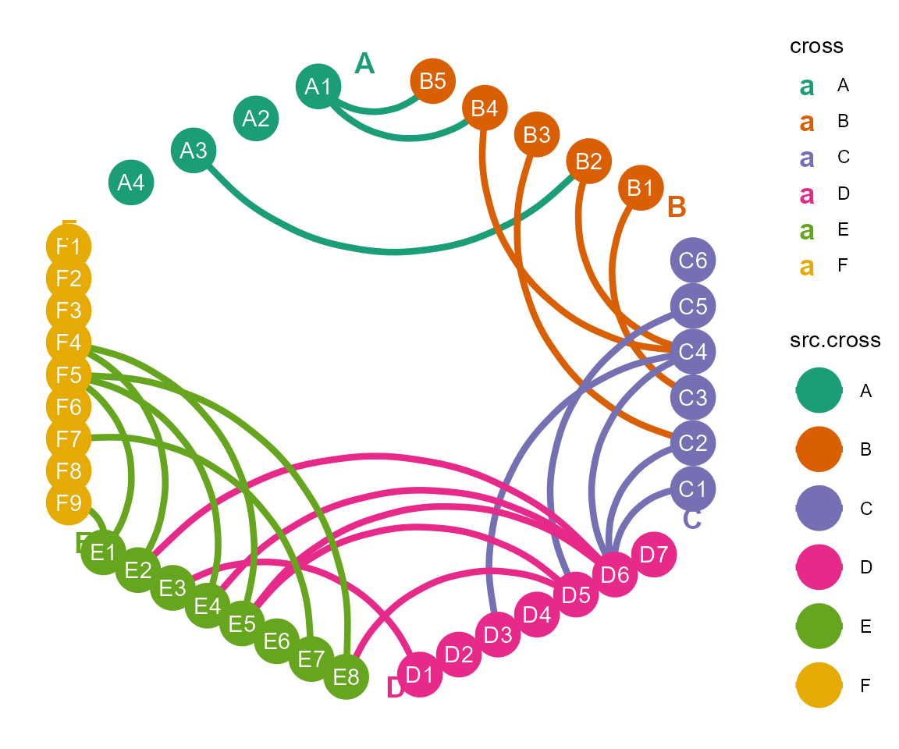
d. layout by hive
cl %>% layout_hive(angles=rep(60,6)) %>% #length of angles must be same with the numbers of groups
cl_plot(cross = list(mapping = aes(color = type),
scale = list(color = scale_color_manual(values = RColorBrewer::brewer.pal(8, "Dark2"))),
size=10,shape=18
),
link = list(geom = "curve", curvature = -0.5,
mapping = aes(color = src.cross),
size=1.5, linetype=1),
label = list(color="white"),
header= list(mapping = aes(color= cross),
scale = list(color = scale_color_manual(values = RColorBrewer::brewer.pal(8, "Dark2"))),
size=5
)
) %>%
cl_void(th = theme(aspect.ratio = 1))
#> Copy layout default into default, and Set active layout to default
#> Copy layout temp into default, and Set active layout to default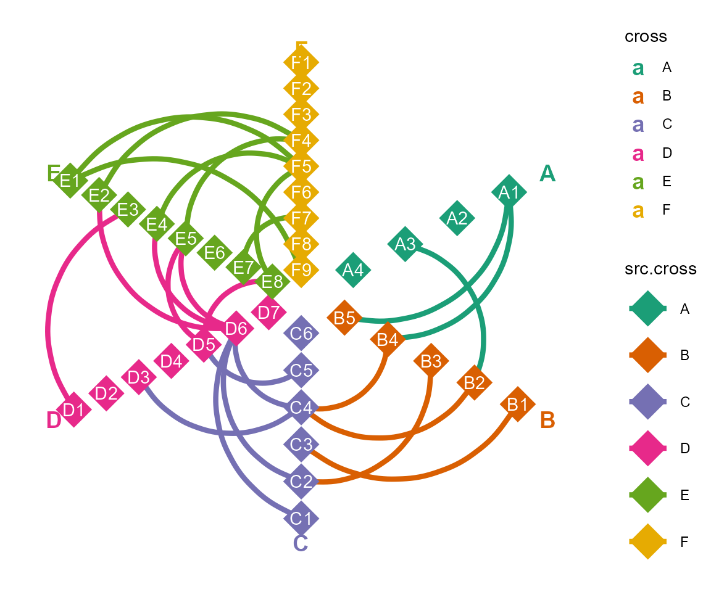
e. layout by arc
cl %>% layout_arc(angles = 45) %>% #length of angles must be same with the numbers of crosses
cl_plot(cross = list(mapping = aes(color = type),
scale = list(color = scale_color_manual(values = RColorBrewer::brewer.pal(8, "Dark2"))),
size=10, shape=18
),
link = list(mapping = aes(color = src.cross),
size=1, linetype=2),
label = list(color="white"),
header= list(mapping = aes(color= cross),
scale = list(color = scale_color_manual(values = RColorBrewer::brewer.pal(8, "Dark2"))),
size=5
)
) %>%
cl_void(th = theme(aspect.ratio = 1))
#> Copy layout default into temp, and Set active layout to temp
#> Copy layout default into default, and Set active layout to default
#> Copy layout temp into default, and Set active layout to default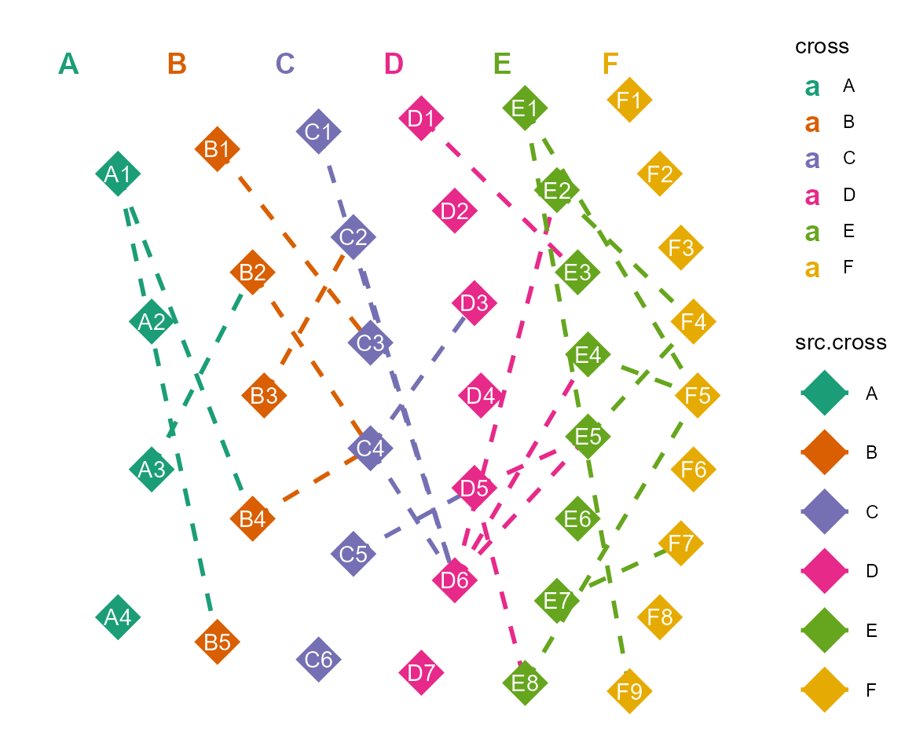
f. layout by combination of several methods
cl %>%
layout_polygon(crosses = c("A","B","C","D"), layout_save = "combined") %>%
layout_row(crosses = c("E", "F"), layout_save = "combined") %>%
tf_rotate(crosses=c("A","B","C","D"), x = 0, y = 0, angle = -45) %>%
tf_scale(crosses = c("E", "F"), x = 0.5, y = 0.5, scale.x = sqrt(2), scale.y = 3) %>%
cl_align(crosses.1 = c("A","B","C","D"), crosses.2 = c("E", "F"),
align.x = T, align.y = T,
anchor.1 = c(0.5, 0),
anchor.2 = c(0.5, 2)) %>%
cl_plot(cross = list(mapping = aes(color = type),
scale = list(color = scale_color_manual(values = RColorBrewer::brewer.pal(8, "Dark2"))),
size=10,shape=19
),
link = list(color="grey75",size=1,linetype=3),
label = list(color="white"),
header = list(mapping = aes(color= cross),
scale = list(color = scale_color_manual(values = RColorBrewer::brewer.pal(8, "Dark2"))),
size=5
)
) %>%
cl_void(th = theme(aspect.ratio = 1))
#> Copy layout default into combined, and Set active layout to combined
#> Copy layout temp into combined, and Set active layout to combined
#> Copy layout combined into combined, and Set active layout to combined
#> Copy layout temp into combined, and Set active layout to combined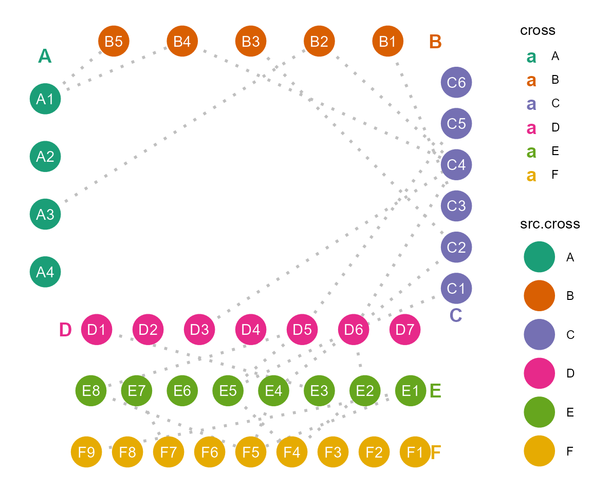
2). examples of complex figure
library(dplyr)
#>
#> 载入程辑包：'dplyr'
#> The following objects are masked from 'package:stats':
#>
#> filter, lag
#> The following objects are masked from 'package:base':
#>
#> intersect, setdiff, setequal, union
library(reshape)
#>
#> 载入程辑包：'reshape'
#> The following object is masked from 'package:dplyr':
#>
#> rename
theme_classic() +
theme(axis.text = element_blank(),
axis.line.x = element_blank(),
axis.ticks.x = element_blank()) ->theme_use2
## crosslink project
cl <- crosslink(example$nodes,example$edges,cross.by="type")
cl %>% cl_plot()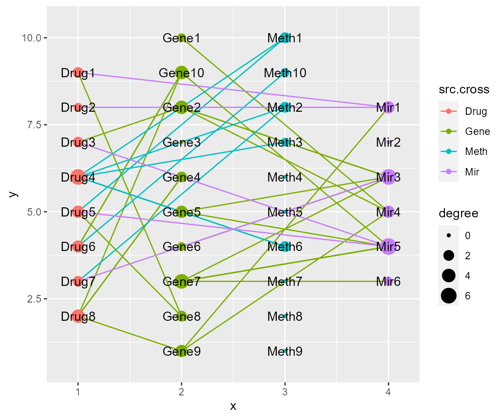
cl <- set_header(cl,header=unique(get_cross(cl)$cross))
cl %>% layout_polygon(crosses = c("Mir","Meth","Gene","Drug"),layout_based = "default") %>%
tf_rotate(crosses= c("Mir","Meth","Gene","Drug"),angle = rep(45,4),layout="default") %>%
tf_shift(x=0.2*(-1),y=1.5,crosses=c("Mir","Meth"),layout="default") -> cl
#> Copy layout default into default, and Set active layout to default
#> Copy layout temp into default, and Set active layout to default
# plot annotation
top <- nodes$id[nodes$type == "Mir"] # set the order as you like
bottom <- nodes$id[nodes$type == "Gene"] # set the order as you like
right <- nodes$id[nodes$type == "Meth"] # set the order as you like
# Top plot
topAnn <- mirData %>%
mutate(mir_f = factor(mir, top)) %>%
ggplot(mapping = aes(x=mir,y=-lfc)) +
geom_bar(fill = "#E7298A",
stat = "identity",
width = 0.5) +
labs(x = NULL, y = "log2(Fold Change)") +
theme_use2
topAnn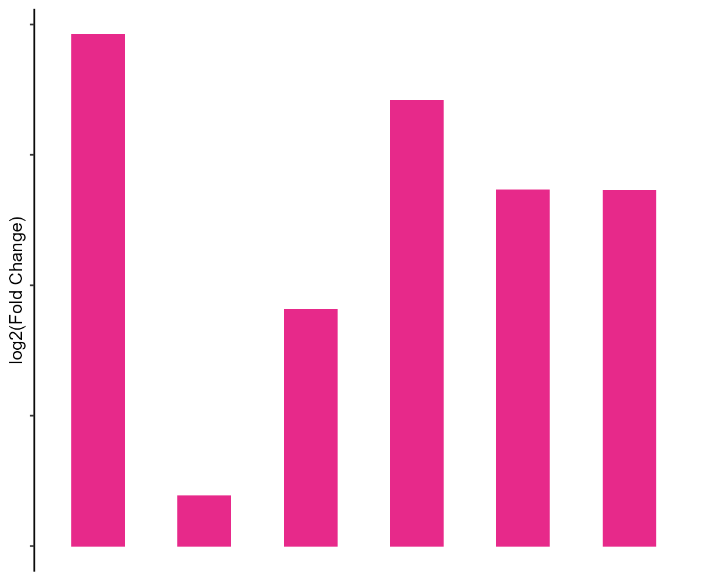
# Bottom plot
botAnn <- geneData %>%
mutate(meth_f = factor(gene, bottom)) %>%
ggplot(mapping = aes(x=gene,y=-lfc)) +
geom_bar(fill = RColorBrewer::brewer.pal(8, "Dark2")[c(1:5,7:9)][2],
stat = "identity",
width = 0.5) +
labs(x = NULL, y = "Difference") +
theme_use2
botAnn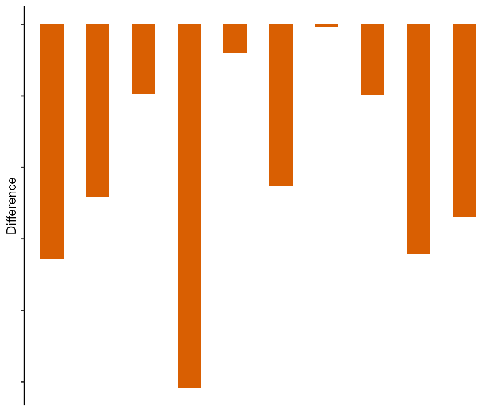
# right plot
rgtAnn <- methData %>%
mutate(mir_f = factor(meth, right)) %>%
ggplot(mapping = aes(x=meth,y=-lfc)) +
geom_bar(fill = RColorBrewer::brewer.pal(8, "Dark2")[c(1:5,7:9)][3],
stat = "identity",
width = 0.5) +
labs(x = NULL, y = "log2(Fold Change)") +
theme_use2 +
coord_flip()
rgtAnn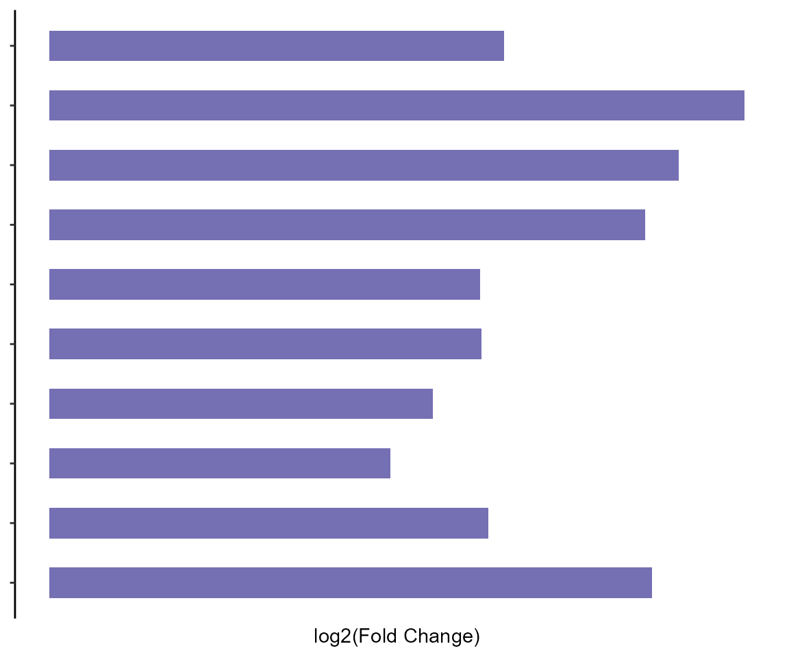
# left plot
mat = matrix(sample(1:100, 64, replace = T), nrow = 8)
colnames(mat)=as.character(cl@cross$Drug)
ggplot(data = melt(mat), aes(X1, X2, fill = value))+
geom_tile(color = "white")+
scale_fill_gradient2(low = "blue", high = "darkgreen", mid = "white",midpoint = 0) +
xlab("")+ylab("")+theme_classic()+
theme(legend.position = "right",
axis.line = element_blank(),
axis.ticks = element_blank(),
axis.text = element_blank()) -> lftAnno
lftAnno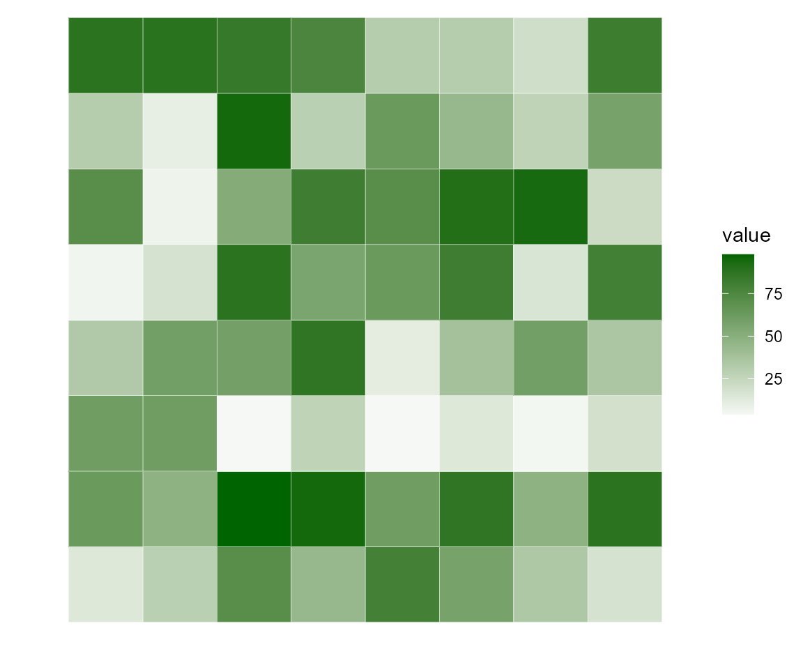
Combine network plot and four annotation plots
cl_plot(cl,
annotation=cl_annotation(top = topAnn,top.by = "Mir",top.height = 0.5,
bottom = botAnn,bottom.by = "Gene",bottom.height = 0.5,
right = rgtAnn,right.by ="Meth",right.width = 0.5,
left = lftAnno,left.by = "Drug" ,left.width = 0.5),
cross = list(mapping = aes(color = type,size=degree,shape=type),
scale = list(color = scale_color_manual(values = RColorBrewer::brewer.pal(8, "Dark2")[c(1:5,7:9)]),
shape = scale_shape_manual(values = 15:23),
size = scale_size_continuous(range=c(1,5)))),
link = list(mapping = aes(color = type,linetype=type,size=cor),
scale = list(color = scale_color_manual(values = RColorBrewer::brewer.pal(8, "Set1")[c(1:5,7:9)]),
linetype=scale_linetype_manual(values = c(1:4)),
size=scale_size(range = c(1,2)))),
header=NA,
label = list(color="black"
,angle=c(rep(0,8),rep(90,10),rep(0,10),rep(90,6))
,nudge_x=c(rep(-2,8),rep(0,10),rep(2,10),rep(0,6))
,nudge_y=c(rep(0,8),rep(-2,10),rep(0,10),rep(2,6))),
add = theme(panel.background = element_blank(),
axis.title = element_blank(),
panel.grid = element_blank(),
axis.ticks = element_blank(),
axis.text = element_blank()))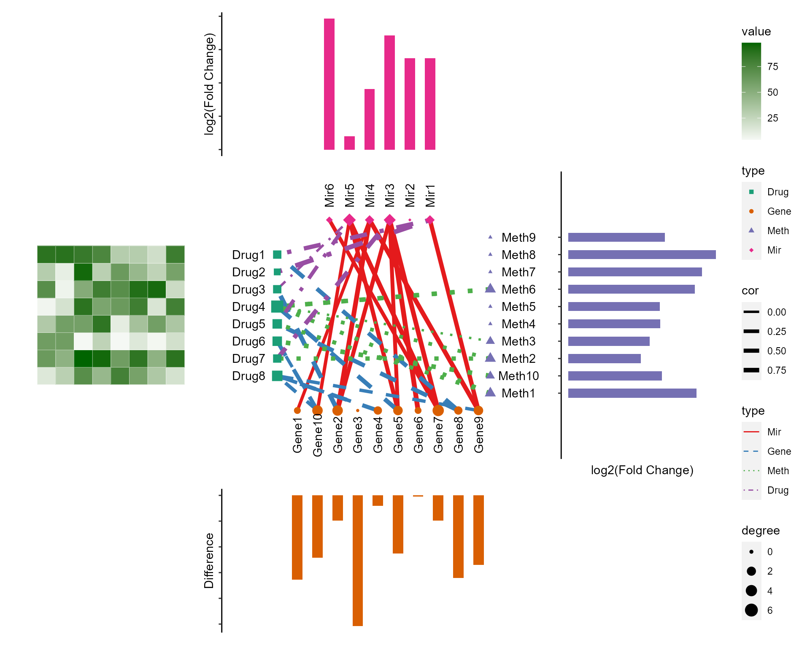